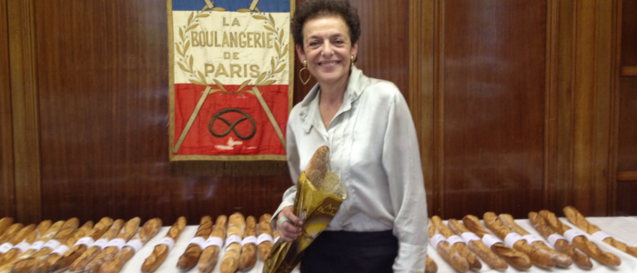
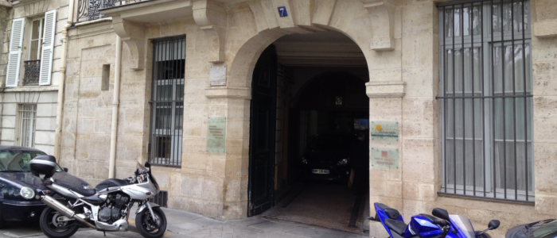
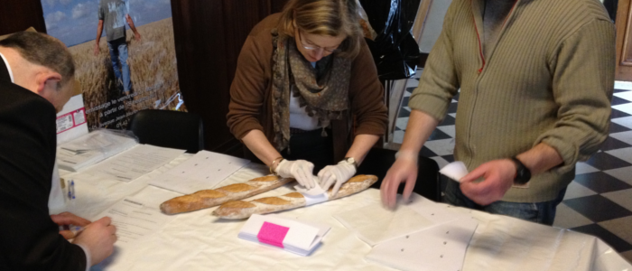
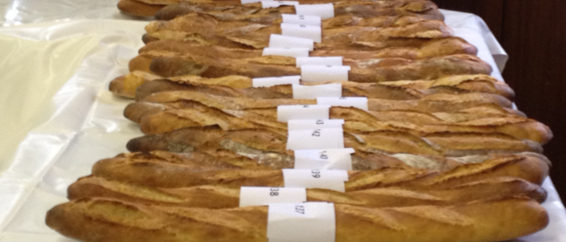
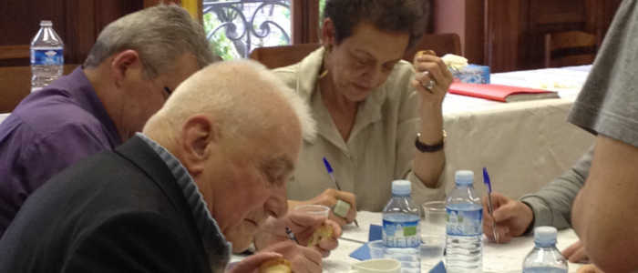
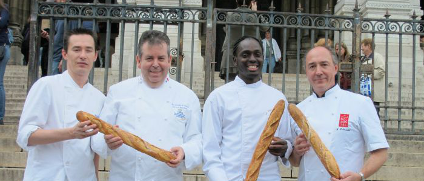
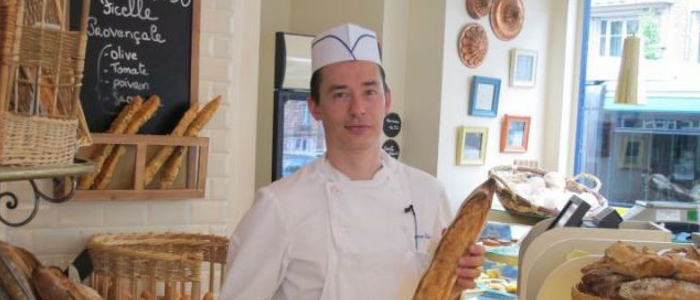
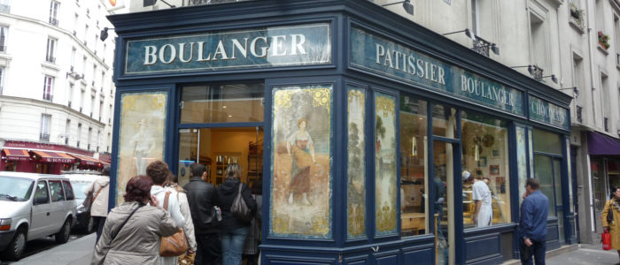
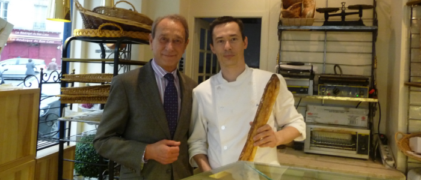
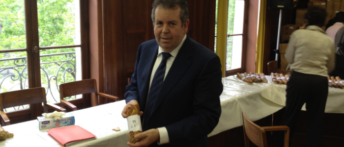

A imagem do parisiense de boina, carregando sua baguete debaixo do braço, pode até ser um clichê, mas é verdade que o pão, ou melhor, o bom pão, é uma instituição nacional na França. Na cidade conhecida por produzir os melhores pães do mundo, e que conta com mais de 1.100 boulangeries (padarias), o Grand Prix de la Baguette de Paris (Grande Prêmio da Bagete) é algo como a escolha da melhor baguete do mundo, e no último dia 02 de maio, RENDEZVOUS foi conferir de perto a 18ª edição deste importante Concurso.
Às margens do rio Sena, na Île de Saint-Louis, o edifícil que abriga o Chambre Professionnelle des Artisans Boulangers-Pâtissiers, apenas identificado por uma pequena placa, recebeu durante a manhã do dia 02 de maio, 168 baguetes candidatas (muito embora 1.103 boulangeries tenham sido convidadas).
Durante a manhã, os artesãos apresentam suas candidatas que são devidamente etiquetadas e registradas por um número (de acordo com a ordem de chegada). Na parte da tarde, um grupo de jurados degusta todas as baguetes que foram pré-aprovadas (das candidatas apresentadas, apenas 124 seguiram na competição, já que 44 baguetes foram desclassificadas por não apresentarem as características mínimas exigidas de peso e comprimento – ter entre 55 e 65 cm e pesar entre 250 e 300 g). Finalmente, por volta das 17hs, o felizardo é anunciado e recebe o telefonema de Lyne COHEN-SOLAL, Secretária Municipal do Comércio de Paris e presidente do júri do Concurso.
“O vencedor é como a Miss França” diz Lyne COHEN-SOLAL, e nos conta um pouco sobre sua percepção a respeito do produto em competição: “A baguete é um elemento constitutivo da alimentação de toda família, não só na França, mas também no mundo inteiro. Trata-se de um produto que compramos todos os dias e um alimento extremamente simples. É um produto que une a tradição e a modernidade, pois se trata de uma velha receita, mas que é interpretada por cada padeiro através dos tempos, e continua a ser apreciada no século XXI. Por tudo isso é um produto muito interessante – se você é rico, consome pão, se é muito pobre, muitas vezes só tem o pão”.
O julgamento das baguetes leva em conta 5 critérios: a aparência, o cozimento, o interior (o miolo), o aroma e o gosto (paladar). Os critérios podem parecer subjetivos, e são mesmo. Quando perguntada como se reconhece uma excelente baguete, Lyne diz: “Ah isso é complicado!”, e explica: “é extremamente subjetivo! Por exemplo, tem os que gostam da baguete bem assada e outros não. Eu adoro a baguete BEM assada, quando ela tem a casca bem crocante, quase dura. Neste concurso, nós misturamos profissionais de diferentes experiências para compor o júri. Na minha mesa estava o senhor que foi o primeiro padeiro a receber o prêmio da melhor baguete, ha 18 anos. Ele nasceu em 1929!”, contou se referindo a René SAINT-OUEN. “Ele é extremamente severo nos comentários porque ele tem uma grande experiência. No júri, nós tentamos combinar pessoas que vão analisar critérios considerados por profissionais (como o grau de cozimento) com outras que tomarão em conta critérios um pouco mais subjetivos, do tipo que são considerados pelos consumidores normais (como o aspecto, gosto e cheiro).”
René SAINT-OUEN é conhecido por seu gosto particular por pães MUITO bem assados. Só pra se ter uma ideia, sua padaria campeã se chama Au Pain Bien Cuit (que em tradução livre quer dizer algo como: O pão bem assado). Com seus 12 anos de jurada da melhor baguette, Lyne vai pela mesma linha de René SAINT-OUEN, pois das 55 baguetes que degustou, gostou apenas de quatro. “O hábito de provar bons pães me fez uma pessoa exigente. Nem todas as baguetes estavam suficientemente assadas, não estavam suficientemente fermentadas. Hoje em dia os padeiros não utilizam tempo suficiente no processo; tempo é algo absolutamente precioso e o pão não demanda apenas bons ingredientes, demanda também tempo, que não deve ser encurtado. Acho que hoje existe uma tendência de se tentar fazer as coisas mais depressa”.
Segundo René SAINT-OUEN, quando se dá um pouco mais de tempo para a massa ela cresce melhor, a casca protege o miolo que fica menos mole, com uma melhor textura.
O VENCEDOR E A REGIÃO DE MONTMARTRE
Dos vencedores dos últimos 6 anos, 5 eram de padarias situadas no 18º arrondissement (distrito) – e este ano não foi diferente. A baguete vencedora tem a assinatura de Sébastien MAUVIEUX da Boulangerie Mauvieux, e está situada em Montmartre, no charmoso e antigo bairro do 18º arrondissement. A recorrência de vencedores deste arrondissement leva Lyne COHEN-SOLAL a acreditar que a água daquela localidade tem “algo de especial”
“Sinceramente, eu não sei. Talvez seja água, pois a origem da água parisiense é diferente em cada bairro. Talvez o ar… eu realmente não sei a razão!”
O vencedor do concurso recebe o prêmio de € 4.000 e passa a ser o fornecedor oficial do Presidente e do Palácio do Elysées (residência oficial do Presidente) por 1 ano, fornecendo 15 baguetes todos os dias. O maior prêmio, no entanto, é indireto. Com a vitória, a padaria ganha enorme notoriedade, aumentando seu faturamento, além de dar a volta ao mundo, já que é convidado constantemente a explicar sua técnica.
Pascal BARILLON, vencedor do Prêmio em 2011, conta sobre a sua experiência: “Já no dia seguinte você é assediado por toda a mídia: rádio, televisão, jornal, revistas… Toda a imprensa francesa e também, a estrangeira. Eu dei três intrevistas para as televisões brasileiras, demonstrações no Japão… todo mundo fica curioso para saber como é o pão que o presidente come”. E completa: “Fornecer nossos produtos ao palácio da presidência confere muito valor a profissão de padeiro artesão”.
Perguntado sobre como é, para um padeiro artesão, receber o prêmio, Pascal diz: “É uma grande satisfação pessoal e profissional. Faz 38 anos que eu trabalho nesse metier. É uma atividade que eu desempenho com muita paixão, e o prêmio foi uma grande recompensa por esses anos de dedicação”.
E sobre os resultados e os projetos, Pascal conta que seu faturamento aumentou em 20%, e que recebeu propostas para abrir boutiques no Japão e também no Brasil: “Mas eu prefiri me concentrar no treinamento e consultoria para aperfeiçoamento dos padeiros através do mundo”.
Quem não quiser perder a oportunidade de saborear a melhor baguete de Paris (quiçá do mundo) do ano de 2012, a Boulangerie Mauvieux fica na Rue Ordener, 159 – Montmartre – 18º arrondissement. Abaixo, listamos, também, os nomes e endereços dos outros 9 primeiros colocados.
2º – Raoul Maeder (Bld Haussmann, 111 – 8º arrondissement)3º – Boulangerie Audou (Rue de Chanzy, 10 – 11º arrondissement)4º – Dominique Anract (Rue de la Tour, 110 – 16º arrondissement)5º – Arnaud Delmontel (Rue des Martyrs, 39 – 9º arrondissement)6º – La Petite Marquise (Place Victor Hugo, 3 – 16º arrondissement)7º – Guillaume Delcourt (Rue Boileau, 100 – 16º arrondissement)8º – Eran Mayer (Rue du Théâtre, 100 – 15º arrondissement)9º – Benjamin Turquier (Rue de Turenne, 134 – 3º arrondissement)10º – Les Saveurs de Wagram (Avenue de Wagram, 169 – 17º arrondissement)
Grande Prêmio da Melhor Baguete de Paris 2012
Boulangerie Mauvieux fica na Rue Ordener, 159 – Montmartre – 18º arrondissement.: 48.893336, 2.337966
2º - Raoul Maeder (Bld Haussmann, 111 – 8º arrondissement): 48.875211, 2.316302
3º - Boulangerie Audou (Rue de Chanzy, 10 – 11º arrondissement): 48.853515, 2.383053
4º - Dominique Anract (Rue de la Tour, 110 – 16º arrondissement): 48.862750, 2.276605
5º - Arnaud Delmontel (Rue des Martyrs, 39 – 9º arrondissement): 48.879439, 2.339923
6º - La Petite Marquise (Place Victor Hugo, 3 – 16º arrondissement): 48.869519, 2.285559
7º - Guillaume Delcourt (Rue Boileau, 100 – 16º arrondissement): 48.839690, 2.261594
8º - Eran Mayer (Rue du Théâtre, 100 – 15º arrondissement): 48.846576, 2.293969
9º - Benjamin Turquier (Rue de Turenne, 134 – 3º arrondissement): 48.864675, 2.364816
10º - Les Saveurs de Wagram (Avenue de Wagram, 169 – 17º arrondissement): 48.886625, 2.304375
MAIS FOTOS DO CONCURSO NO FACEBOOK DE RENDEZVOUS
https://www.facebook.com/media/set/?set=a.436357013041337.104372.401534799856892&type=1









